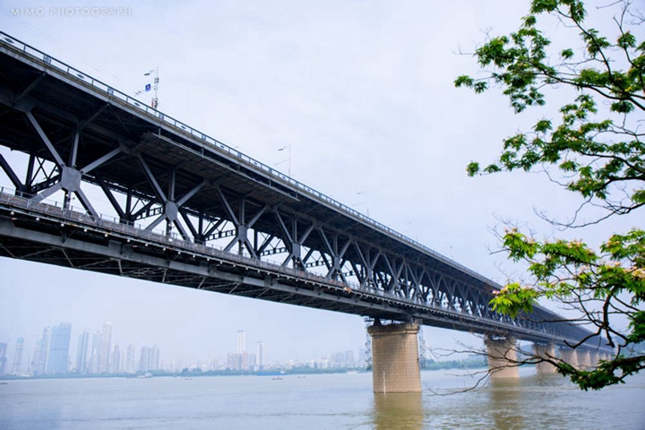

-
千风万景中遇见你 - 首页
- 精选
- 邂逅
-

- 消息

目的地>中国>武汉
Wu Han


武汉

武汉天气
晴 30℃~36℃
189人来过这里
29篇旅游日志
29篇旅游日志

景点介绍
武汉是湖北省省会，华中地区最大都市及中心城市。长江及其最长支流汉江横贯市区，将武汉一分为三，形成了武昌、汉口、汉阳三镇隔江鼎立的格局。唐朝诗人李白在此写下“黄鹤楼中吹玉笛，江城五月落梅花”，因此武汉自古又称“江城”。
武汉是一座典型的山水园林城市，上百座大小山峦遍布三镇，近两百个湖泊座落其间，水域面积占到全市国土面积的四分之一，其中东湖水域面积33平方公里，是中国最大的城中湖。
著名的武汉旅游景点有天下第一楼黄鹤楼、中国最大城中湖东湖、佛教圣地归元寺、万里长江第一桥武汉长江大桥、亚洲民主之门红楼、百年老街江汉路等。
文化底蕴浓厚，古典与现代并存的城市。风景还不错，好玩的景点很多。江汉路的建筑让人印象深刻，长江大桥夜景很美，户部巷的美食值得花时间去寻觅，还可以在樱花盛开的季节来赏樱。
景点美照

- 2016-2017© 遇见网® yujian.com All rights reserved.Version v1.00
遇见网为旅行爱好者提供记录自己旅途见闻并展示的个人空间。